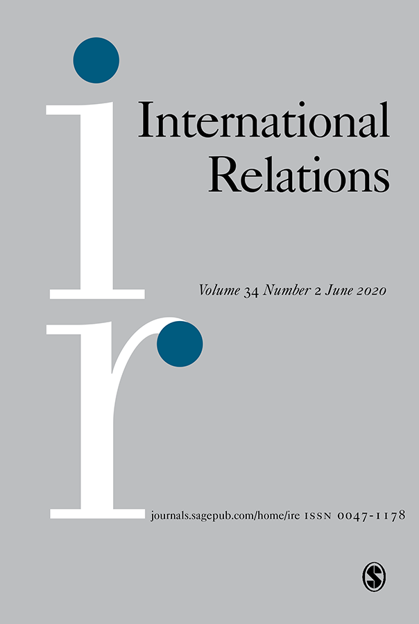

收录于合集 #新刊速递 123个

期刊简介

International Relations（《国际关系》）是国际关系领域的顶尖期刊之一，由SAGE出版社与大卫·戴维斯纪念研究所(David Davies Memorial Institute)联合出版编辑，其2018年的影响因子为1.385。
本期编委
【编译|校对】
丁伟航 宋翔宇 郭新靓 阮镇炜
缪高意 朱文菡 李雯珲 杨 帆
【排版】 王国伟
本期目录
1. 英国脱欧后的外交政策：失去欧洲并寻找新的角色
British foreign policy after Brexit: losing Europe and finding a role
2. 通往地球政治之路：从秩序消亡到宇宙政治协调
On the way to planet politics: From disciplinary demise to cosmopolitical coordination
3. 衡量共识：国际关系中的潜在语义分析、语言同步和共识
Measuring common knowledge: Latent semantic analysis, linguistic synchrony, and common knowledge in international relations
4. 国际关系学中的现实一致性、解放式政治与情境知识：一个过程社会学视角
Reality-congruence, emancipatory politics and situated knowledge in International Relations: a process sociological perspective
5. 世界主义视角下的人权、治外法权以及优秀的国际公民
Human rights, extraterritoriality and the good international citizen: A cosmopolitan perspective
6. 国际关系理论在中东：外交政策分析的理论路径
IR in the Middle East: Foreign policy analysis in theoretical approaches
01
英国脱欧后的外交政策：失去欧洲并寻找新的角色
【题目】 British foreign policy after Brexit: losing Europe and finding a role
【作者】 Kai Oppermann，开姆尼茨工业大学；Ryan Beasley，圣·安德鲁斯大学； Juliet Kaarbo，爱丁堡大学
【摘要】
2016年“脱欧”公投是英国外交政策的转折点。根据角色理论，我们追溯了英国在与有关国际行为体互动时为确立新的外交政策角色所作的努力。作者发现，支持英国脱欧的“夺回控制权”愿望尚未转化为令人信服的外交政策方向。为了避免陷入孤立的角色，英国制定了一项迷失方向的外交政策，其中包含一些部分不相容的角色，如大国、全球贸易国、英联邦领导人、欧洲联盟（欧盟）区域伙伴和美国的忠实盟友。国际社会通过社会化和改变角色的过程，基本上拒绝了这些努力。英国与国际行为体之间的这些角色冲突，以及英国不同角色愿望之间的冲突，迫使英国的政策走向其不受欢迎的孤立主义角色，有可能形成英国脱欧后的长期外交政策取向。
British foreign policy stands at a turning point following the 2016 ‘Brexit’ referendum. Drawing on role theory, we trace the United Kingdom’s efforts to establish new foreign policy roles as it interacts with the concerned international actors. We find that the pro-Brexit desire to ‘take back control’ has not yet translated into a cogent foreign policy direction. In its efforts to avoid adopting the role of isolate, the United Kingdom has projected a disoriented foreign policy containing elements of partially incompatible roles such as great power, global trading state, leader of the Commonwealth, regional partner to the European Union (EU) and faithful ally to the United States. The international community has, through processes of socialisation and alter-casting, largely rejected these efforts. These role conflicts between the United Kingdom and international actors, as well as conflicts among its different role aspirations, have pressed UK policies towards its unwanted isolationist role, potentially shaping its long-term foreign policy orientation post-Brexit.
【编译】 丁伟航
【校对】 缪高意
02
通往地球政治之路：从秩序消亡到宇宙政治协调
【题目】 On the way to planet politics: From disciplinary demise to cosmopolitical coordination
【作者】 Philip R Conway，中欧大学
【摘要】
从气候混乱到大规模灭绝，从“地球工程”到空前的城市化，近几十年来，世界政治已不可避免地成为全球性问题。因此，最近关于“地球政治”的讨论是适时的。然而，迄今为止，辩论受到一些概念和政治问题的限制。特别是，对于解决集体本体论中自然科学知识权威方面的严重分歧毫无兴趣，这就带来了一个问题：在地球政治中，什么才是真正的政治。借用Gayatri Spivak“行星性（planetarity）”的概念和Isabelle Stengers“宇宙政治（cosmopolitics）”的概念，这种干预包括判断、方法和替代选择。这种判断是，这场辩论尚未为参与者所要求的思维过程和政治过程构建一个可行的起点。这种方法同时是“司法的”和“外交”的——也就是说，它侧重于将未公开的和半公开的冲突公开化，同时，进一步地，从“中间”思考已确立的争论立场，从而创造新的可能性。替代选择则提出将全球联系的宇宙政治议程与宇宙政治协调进程分开。最后，有观点认为，将“星球性（planetary）”加入政治中，即使有违直觉，也恰当地概括了“政治多样性”的状况。然而，这种概括应当有助于与各种各样的多重问题建立联系，而非加强秩序的巩固。也就是说，地球政治的目的是创造试验性的做法，以保持着不同权力之间，而不仅是民族国家之间不太可能结盟的可能性。
From climatic chaos to mass extinction, from ‘geoengineering’ to unprecedented urbanisation, world politics has, in recent decades, become inescapably planetary. Recent discussions concerning ‘Planet Politics’ are, therefore, timely. However, the debate, to date, has been limited by a number of conceptual and political problems. In particular, an apparent disinclination to address serious differences as regards the authority of natural scientific knowledge with respect to collective ontologies raises the question of what is truly political in planetary politics. Drawing on Gayatri Spivak’s concept of ‘planetarity’ and Isabelle Stengers’ ‘cosmopolitics’, this intervention consists of a diagnosis, a method and an alternative. The diagnosis is that this debate has yet to constitute a workable starting point for the very thought processes, and political processes, that those involved demand. The method is simultaneously ‘forensic’ and ‘diplomatic’ – that is, it focuses on bringing undisclosed and semi-disclosed conflicts into the open while, furthermore, ‘thinking through the middle’ of established polemical positions, enabling new possibilities. The alternative, then, proposes to distinguish a cosmopolitan agenda of global connectedness from a cosmopolitical process of situated coordination. Finally, it is argued that adding ‘planetary’ to our politics aptly, if counterintuitively, encapsulates the condition of ‘political multiplicity’. However, rather than lending weight to disciplinary consolidation, this encapsulation should serve to forge connections with problems of multiplicity of all sorts. That is, the purpose of planetary politics, as conceived herein, would be that of inventing speculative practices that maintain the possibility of unlikely alliances between disparate powers, and not only those of the nation state.
【编译】 宋翔宇
【校对】 朱文菡
03
衡量共识：国际关系中的潜在语义分析、语言同步和共识
【题目】 Measuring common knowledge: Latent semantic analysis, linguistic synchrony, and common knowledge in international relations
【作者】 A Burcu Bayram，阿肯色大学；Vivian Ta，美国伊利诺斯州莱克福里斯特学院。
【摘要】
共识，也叫主体间性，是国际合作和外交学领域的一个核心概念。但在国际关系中，缺少系统性衡量共识的方法。综合计算机语言学、心理学和通信传播学，本文引入潜在语义分析（LSA）来衡量行为体间的共识。借助LSA方法，作者认为可以通过根据对话双方用词的相同程度和语言上的同步程度来衡量共识。作者大概列出了几种利用LSA的方法，并对布雷顿森林谈判进行了实证检验。LSA方法有望帮助国际关系学者抓住数字时代提供的研究机会，在定性和定量方法之间架起一座桥梁。
Common knowledge, also called intersubjectivity, is a core theme in the study of international cooperation and diplomacy. Yet International Relations (IR) lacks a method to systematically measure the degree of common knowledge. Drawing from research in computational linguistics, psychology, and communication, we introduce latent semantic analysis (LSA) to measure common knowledge in specific communicative exchanges between actors. We argue that the extent to which speaking partners use words in the same way and get in synch linguistically can be used to measure the degree of common knowledge, and this can be measured by the LSA method. We outline several ways LSA can be valuable to IR scholars and provide an empirical illustration of using this method in the case of Bretton Woods negotiations. The LSA method promises to help IR scholars seize the research opportunities offered by the digital age and build a bridge between qualitative and quantitative methods.
【编译】 郭新靓
【校对】 李雯珲
04
国际关系学中的现实一致性、解放式政治与情境知识：一个过程社会学视角
【题目】 Reality-congruence, emancipatory politics and situated knowledge in International Relations: a process sociological perspective
【作者】 Andre Saramago, 科英布拉大学
【摘要】
最近关于知识情境性在认识论和政治上的意义的讨论引起了国际关系学界对于该学科未来发展的诸多重要问题的思考。这些讨论挑战了学者们对于世界政治的理解，即：人类在什么条件下能发展出或多或少与客观现实一致的关于世界政治的知识，以及这些知识对于解放式政治活动的意义是什么。本文认为过程社会学应当被理解成对这些讨论的一个有益补充。假定一个完全 “现实主义”的取向，过程社会学提供了一个由社会学启发的，对推动知识发展的物质、观念和情绪力量的分析。如此一来，过程社会学能帮助那些对知识情境性的意义感兴趣的国际关系学者强化对于可能发展出知识的社会条件的理解能力。这种知识是与客观现实世界更加一致的，而不是更多地被情绪或特定立场所影响。过程社会学还能帮助这些学者更好地鉴别和剖析历史上所涌现的、应当引导解放式世界政治变革的价值观。
Recent discussions of the epistemological and political implications of the situatedness of knowledge in International Relations (IR) have raised important questions regarding the future development of the discipline. They pose the challenge of understanding under what conditions human beings develop more or less reality-congruent knowledge about world politics and what are the implications of such knowledge for emancipatory political activity. This article argues that process sociology should be understood as a relevant complement to these discussions. Assuming a fundamentally ‘realist’ orientation, process sociology provides a sociologically informed analysis of the material, ideational and emotional forces shaping the development of knowledge. As such, it can help those concerned with the implications of the situatedness of knowledge in IR reinforce their capacity to both understand the social conditions under which it is possible to develop more detached and reality-congruent knowledge about the world and better identify and explain the historically emergent values that should orientate the emancipatory transformation of world politics.
【编译】 阮镇炜
【校对】 杨帆
05
世界主义视角下的人权、治外法权以及优秀的国际公民
【题目】 Human rights, extraterritoriality and the good international citizen: A cosmopolitan perspective
【作者】 Richard Shapcott，昆士兰大学
【摘要】
这篇文章回顾了优秀的国际公民(GIC)在国际社会中作为一个文明能动者的可能性，并认为与人权相关的世界主义治外法权概念是一个尚未被完全开发的、用于思考优秀国际公民的国家责任的思想资源。治外法权主张超越领土边界的管辖权，长期以来一直与国家主义者和民族主义者的目的联系在一起。然而，治外法权在人权和某些刑法方面的实践(如儿童性观光和贩运)中具有一种极其重要的世界主义和文明的潜力。这种形式的治外法权允许各国通过接受因尊重人权和法治而产生的行动自由限制，从而约束在国外的公民，并有可能限制自身的外交政策和实践。
This article revisits the possibilities of the good international citizen (GIC) as a civilising agent in international society. It argues that an underdeveloped resource for thinking about state responsibilities as GIC is the idea of cosmopolitan extraterritoriality (ET) in relation to human rights. ET, the assertion of jurisdiction beyond territorial borders, has long been associated with statist and nationalist purposes; however, a significant cosmopolitan, and civilising, potential can be found within practices of ET in relation to human rights and certain aspects of criminal law such as in the practices of child sex tourism and trafficking. This form of ET allows states to restrain their own citizens abroad and potentially restrain their own foreign policies and practices by accepting limits on their freedom of action derived from respect for human rights and respect for the rule of law.
【编译】 杨帆
【校对】 阮镇炜
06
国际关系理论在中东：外交政策分析的理论路径
【题目】 IR in the Middle East: Foreign policy analysis in theoretical approaches
【作者】 May Darwich，杜伦大学；Juliet Kaarbo，爱丁堡大学
【摘要】
中东国际关系研究（IRME）面临国际关系理论（IR）与该地区特殊性的对立。为了解决这个问题，学者们将国内因素补充到国际关系理论结构方法中，并借此来进行理论校正。因此，近来中东国际关系研究呈现出决策转向和国内政治转向。本文对中东国际关系研究的国内政治取向进行了批判性分析。本文认为，这类研究因其心理导向和基于能动者的维度而忽略了外交政策分析（FPA），并且这构成了该地区研究一次错失的机会。本文建议将外交政策分析纳入中东国际关系研究，并认为外交政策分析的观点可以为中东国际关系研究中占主导地位的折衷框架提供一种替代性和补充性的方法。
Research on international relations of the Middle East (IRME) has suffered from a schism between International Relations (IR) theory and regional particularities. To address this, scholars have offered corrective accounts by adding domestic factors to IR structural approaches. Studies on IRME thus reflect the turn to decision-making and domestic politics that has recently occurred. This article develops a critical analysis of the domestic politics orientation in IRME. We argue that this scholarship ignores work in foreign policy analysis (FPA) with its psychological-oriented and agent-based dimensions and that this constitutes a missed opportunity for the study of the region. The article offers suggestions for incorporating FPA research into IRME and argues that an FPA perspective offers an alternative and complementary approach to the eclectic frameworks predominant in the scholarship on IRME.
【编译】 朱文菡
【校对】 宋翔宇


好好学习，天天“在看”

国政学人
支持学术公益与知识传播
微信扫一扫赞赏作者 __赞赏
已喜欢，对作者说句悄悄话
取消 __
发送给作者
发送
最多40字，当前共字
上一页 1/3 下一页
长按二维码向我转账
支持学术公益与知识传播
受苹果公司新规定影响，微信 iOS 版的赞赏功能被关闭，可通过二维码转账支持公众号。